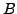
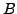
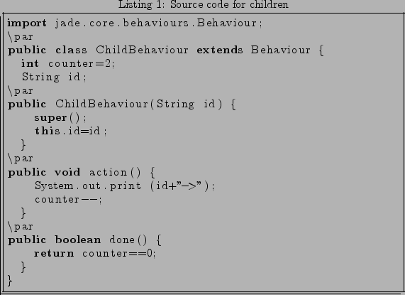
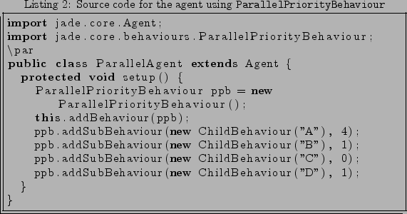

Next: Sequential management of behaviours Up: Description Previous: Description
Each child is assigned by the user with a priority equal or greater than 0. The greater the number, the lesser the priority. So a child with priority value of 3 has more priority than other behaviour with priority value of 5. The highest priority a behaviour can reach is 0. This priority assigned by the user is called static priority, and can be changed by the user at any moment.
Internally, the ParallelPriorityBehaviour's scheduler uses another priority that is called dynamic priority. As its name indicates, this priority is increased dynamically by the scheduler in order to avoid the starvation of a behaviour. So the dynamic behaviour of a child is a number between the static priority value of this child and 0.
The idea of the algorithm is that the scheduler executes those children with a dynamic priority value of 0. If there are several behaviours that have dynamic priority of 0 then they are executed in the order in which they were inserted. Also, if the selected behaviour is blocked then the scheduler does not execute it. At last, if there are not children with these dynamic priority of 0 then all dynamic priorities are increased.
In order to understand better the functioning of the algorithm, we will use an
example. We will create a ParallelPriorityBehaviour with four children
 , ,
, ,  and
and  . Each child is assigned with (static) priority of
4, 1, 0 and 1, respectively. These children
are cyclic behaviours that ends when they are executed twice (see listing
1). The ParallelPriorityBehaviour ends when all its
children end (see listing 2).
. Each child is assigned with (static) priority of
4, 1, 0 and 1, respectively. These children
are cyclic behaviours that ends when they are executed twice (see listing
1). The ParallelPriorityBehaviour ends when all its
children end (see listing 2).


Below we show the steps followed by the scheduler. These steps are also summarized in table 1. In this table the superindex of each child is its static priority, while the subindex is its dynamic priority.
It is worth to note that even when the scheduler increases the dynamic priority of behaviours, it does not in account whether these behaviours are blocked or not. Only when a child is selected to be executed, the scheduler skips it if this sub-behaviour is blocked.
Also, as in the case of the current ParallelBehaviour, if all children are blocked then the ParallelPriorityBehaviour becomes blocked, until one or more children becomes again runnable.
An interesting feature is that the new ParallelPriorityBehaviour can replace the current ParallelBehaviour. If the user does not specify any priority on children, the ParallelPriorityBehaviour behaves exactly like the ParallelBehaviour.
Juan A. Suarez Romero 2006-10-27